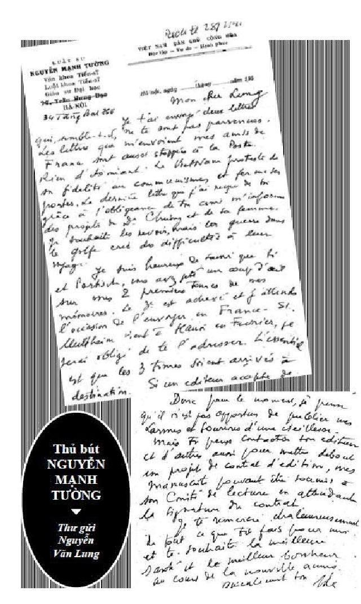

Chương 23 (Tt)

● a mươi năm sa mạc
♠ Trả lời Hoà Khánh:
- Luật sư có bị bắt, có bị giam cầm gì không?
- Không. Chỉ bị đuổi ra khỏi tất cả những nơi đang làm việc. Và độc ác nhất là bị cô lập hoàn toàn. Các anh cứ tưởng tượng suốt mấy chục năm trời, không ai dám đến gặp tôi cả. Họ sợ bị liên lụy đến bản thân, đến gia đình của họ. Có khi, đi ngoài đường, nhìn thấy tôi từ xa, là bạn bè, học trò cũ của tôi phải tránh đi chỗ khác. Tôi cũng không trách gì họ. Vì sự an toàn của họ, họ phải làm thế thôi. Nhưng đau xót lắm.
- Trong thời gian suốt mấy chục năm trời như vậy, luật sư làm gì để sống?
- Không làm gì cả. Xin việc gì người ta cũng không nhận. Thoạt đầu, cứ bán dần đồ đạc trong nhà mà ăn tiêu. Bán bàn ghế, giường tủ, rồi bán quần áo, giầy dép... Cuối cùng phải bán đến cả sách vở tôi dành dụm thu thập sắm trong hai mươi năm. Bán theo giá bán giấy ký thôi. Rẻ mạt. Nhưng cần sống thì phải bán. Cứ mỗi lần bán sách là mỗi lần tôi có cảm tưởng như có ai lấy dao găm đâm vào tim mình. Rồi tất cả đồ đạc cạn dần, cạn dần. Tôi lại sống bằng sự bố thí của anh em, bạn bè. Lâu lâu người này cho cái đồng hồ, người khác cho một ít tiền.
- Những người giúp luật sư thuộc thành phần nào?
- Một số là học trò cũ cũa tôi; một số là bạn bè của tôi lúc còn ở Pháp và một số khác nữa là hoàn toàn xa lạ vì nghe tiếng tôi, thương cho hoàn cảnh của tôi, từ Pháp thỉnh thoảng cho một ít quà.
- Họ là người Việt Nam hay là người Pháp?
- Người Việt có, người Pháp có"1012.
♠ Trả lời Phạm Trần:
"Cuộc sống thật gay. Khó khăn thật lớn. Nhưng cái khó khăn nhất là nỗi cô độc. Không ai dám tiếp xúc với mình. Học trò thấy mình từ xa thì đã né tránh. Nhưng tôi hiểu và thông cảm cho họ. Còn sau này, thỉnh thoảng vẫn có anh em cán bộ đi công tác và họ nhờ tôi chỉ vẽ đôi chút tiếng Pháp. Ai sẵn thì họ giúp chút ít. Thế thôi"1013
♠ Đói - Ông viết: "Tôi muốn dạy tư Pháp văn tại nhà riêng. Nhưng vừa bắt đầu thì một bọn công an, có lẽ do thám tử và chỉ điểm quanh tôi, báo, ùa vào nhà, bảo rằng trong chế độ cộng sản, chẳng có gì riêng tư, kể cả những bài học do người thầy bần cùng nghèo đói dạy! Làm gì bây giờ? Vì cao tuổi, không thể đạp xích lô như một số đồng nghiệp trẻ, chứ tôi nào có sợ gì "người ta xầm xì này nọ" (...)
Tôi bị kết án đói kinh niên. Một sự mệt mỏi mênh mông, vô bờ bến, xâm chiến thân thể, như nước sông mùa lụt tràn ngập một miền, chỉ ngọn cây và đỉnh đồi là trồi lên được. Tôi có cảm tưởng như mình bị nhận chìm trong một trạng thái hôn mê mà sự sáng suốt của ý thức thỉnh thoảng bùng lên chọc thủng. Cố gắng đứng dậy đi vài bước lảo đảo nhưng rồi lại ngã lăn đùng ra giường, đợt sóng bạc nhược đánh tan tành tất cả sức lực cơ bắp còn lại. Cùng lúc ấy, dạ dầy quặn thắt trong một chuyển động tuần hoàn cực kỳ đau đớn. Những co giật làm tôi luân lưu giữa căng và dãn, trước khi bị vùi sâu trong cơn Thủy triều bất tỉnh, mất hẳn khả năng tri giác. Ra khỏi những cơn khủng hoảng này, cật vỡ, hồn bầm. Tôi đã học tập kinh nghiệm đói!"1014
♠ Tiếp tục viết sách - Trả lời Phạm Trần:
- Suốt 30 năm "ngồi chơi xơi nước" cụ còn mang ước vọng dung hợp (Âu Á) nữa không?
- Có chứ. Anh nói "ngồi chơi xơi nước" là không đúng. Lo cái ăn mờ con mắt. Ngồi chơi thì ít mà uống nước (thay ăn) thì nhiều. 30 năm qua tôi đã hoàn thành được 4 công trình: Lý thuyết sư phạm thế kỷ XVI-XVIII: từ Erasme tới Rousseau; Eschyle và thảm kịch Hy Lạp; Virgile và thời hoàng kim La Tinh và dịch bản Orestia (chuyện chàng Orestia) của Eschyle.
Văn hoá Âu đã giáo dục những thế hệ con người mới như thế nào để chuẩn bị cho những cuộc cách mạng kỹ thuật, dân quyền và nhân quyền. Quan hệ giữa sinh hoạt trí thức và lãnh đạo chính trị phải được quan niệm và xác định như thế nào. Những tiến trính phải qua từ một thể chế sơ khai bước sang thể chế dân chủ...
Những vấn đề trên (mà ta hiện nay đang loay hoay) đã được giải quyết ngay từ thời cổ đại La Tinh, Hy Lạp cả rồi. Tôi tìm các thí dụ quá khứ để giải đáp các câu hỏi hiện tại. Riêng vở kịch Orestia tôi có thêm một phần dẫn nhập để người đọc dễ dàng theo dõi. Các sách trên viết bằng Việt ngữ. Các nhà xuất bản Hà Nội không nghi ngờ giá trị của chúng, nhưng không thể in vì không tiền và sợ phổ biến khó. Ngoài này có thể in giúp được không? Những đứa con cưu mang hàng chục năm mà không ra đời được thì xót xa lắm"1015.
● Trở lại Pháp 10/1989-1/1990
Mùa xuân 1989, dược sĩ Tống Lịch Cường, anh rể Nguyễn Mạnh Tường ở Paris, viết giấy bảo lãnh để ông sang Pháp, chuyến đi do các học trò cũ đài thọ.
Tháng 10/1989, ông đến Pháp, ở nhà nha sĩ Nguyễn Văn Lung, 12 rue d'Auteuil, Paris 16, gần nhà ông bà Hoàng Xuân Hãn, 60 rue Théophile Gautier Paris 16. Địa chỉ trên giấy tờ: 51 Boulevard Montparnasse - 14/1/1990.
"Năm 1989, ở tuổi 80, những người bạn Pháp Việt mời tôi đi Pháp. Lúc đó, sau Đại Hội VI của Đảng cộng sản, lần đầu tiên trong lịch sử, họ tuyên bố chủ nghiã tự do oe oe chào đời; tôi lợi dụng cơ hội để xin cấp giấy thông hành đi Pháp. Tôi cũng không nghĩ là đơn được chấp thuận với quá khứ chính trị nặng nề như vậy. Nhưng, ngạc nhiên vô cùng, chỉ hai tháng là tôi có giấy thông hành và hộ chiếu xuất ngoại. Chẳng may chính phủ Pháp lại làm khó dễ trong nhiều tháng mới cấp giấy nhập cảnh. Đúng là thế giới lộn ngược.
Tôi đến phi trường Orly một buổi chiều tháng mười. Những người bạn Pháp Việt đón tôi thật cảm động. Sau 60 năm, tôi tìm lại quê hương của trí tuệ tôi cùng với sự đón tiếp ân cần và tế nhị của những trái tim vàng. Sức khoẻ suy nhược bởi 40 năm thiếu dinh dưỡng thể xác và khốn đốn tinh thần làm tôi quỵ ngã. Lần đầu tiên trong đời, ở tuổi tám mươi, tôi vào một bệnh biện của Pháp, và đã được săn sóc hết lòng. Mười ngày sau, tôi liên lạc lại với bạn hữu và tiếp tục công việc. Trả lời phỏng vấn đài truyền hình TF1, thuyết trình hai lần, một ở Clermont L'Hérault, gần Montpellier, nơi tôi đã đến tìm tài liệu về J. Boissières để làm luận án phụ tiến sĩ văn chương, và một lần ở Paris VII. Tôi đến thăm thủ lãnh luật sư đoàn Paris"1016.
Trả lời Phạm Trần:
"- 80 tuổi rồi, chẳng còn dám đặt chương trình gì nữa. Có cái ước nguyện ôm ấp bao nhiêu năm nay là được sang đây để cám ơn các ân nhân (hầu hết là học trò cũ). Những người đã giúp đỡ tôi mấy chục năm qua. Không có họ thì tôi không chắc sống tới ngày nay. Mà bây giờ đã sang được. Thế là mãn nguyện.
- Làm sao sang được đây?
- Mọi chi phí các học trò tôi lo. Chứ tôi làm gì dám nghĩ một cuộc Âu du như vậy"1017.
Phượng Linh Đỗ Quang Trị viết:
"Năm 1990 qua Pháp, thầy được con một ông bạn Pháp cùng học ở Montpellier đóng tiền bảo kê sức khoẻ. Ông bố đã mất nhưng con nhớ bố kể lại, rất khâm phục tài học của thầy Tường, nên đã giúp đỡ. Nhờ vậy mà khi thầy Tường ngã ngất vì tim yếu tại nhà anh Nguyễn Văn Lung là em Hoàng Xuân Hãn phu nhân, Thầy đã được đưa vào bệnh viện điều trị miễn phí"1018.
Trong thời gian ở Pháp, ngoài các buổi trả lời phỏng vấn và nói chuyện ở các đài truyền hình TF1, FR3, đại học Paris VII v.v... Nguyễn Mạnh Tường còn tiếp xúc rộng rãi với mọi tầng lớp Việt kiều, đặc biệt ông muốn gặp giới trẻ quan tâm đến tình hình đất nước và chúng tôi, theo lời yêu cầu của bác sĩ Trịnh Văn Tuất, bạn ông, cũng đã tổ chức một buổi tại nhà. Trong những cuộc gặp gỡ ấy, ông đều nói thẳng nói thật, nhưng khi gặp những câu hỏi có tính cách chính trị, của những người muốn ông mạnh mẽ phản đối nhà cầm quyền, về sự đối xử với ông trong 30 năm sau NVGP, ông ôn tồn trả lời: bản thân ông đã quên mọi oán thù. Về Hồ Chí Minh, ông bảo: hãy để lịch sử phán đoán.
Lúc đó phong trào cách mạng nhung vừa khởi xuất, hỏi ông tiên đoán gì về tình hình Việt Nam? Ông mỉm cười: Tôi không phải là nhà tiên tri. Việc gì phải đến sẽ đến.
Về phía ông, chuyến đi Pháp dường như là động cơ thúc đẩy ông viết, bởi khi về nước, chỉ trong vòng bốn năm (từ 1990 đến 1994), ông đã hoàn tất một lượng sách đáng kể.
● Những năm tháng cuối - Thư từ trao đổi giữa Nguyễn Mạnh Tường và Nguyễn Văn Lung
Chúng tôi công bố những thư viết tay và đánh máy của Nguyễn Mạnh Tường gửi Nguyễn Văn Lung vì đây là chứng từ đích thực về giai đoạn 1990-1994, thời kỳ ông viết mạnh nhất.
Francophonie - Cộng Đồng Quốc Tế Các Nước Nói Tiếng Pháp là một tổ chức được thành lập năm 1986, trong khuôn khổ hội nghị thượng đỉnh các nước nói tiếng Pháp tại Paris. Việt Nam tham dự tổ chức này từ tháng 12/1989, nhân chuyến thăm của Alain Decaux, bộ trưởng Đặc Trách Khối Pháp Ngữ. Nha sĩ Nguyễn Văn Lung (1916 - 2009), qua thư từ trao đổi với những người Pháp, chứng tỏ ông đã hết sức vận động Bộ Ngoại Giao Pháp tài trợ để mở các Câu Lạc Bộ Pháp Ngữ tại Việt Nam. Luật sư Nguyễn Mạnh Tường chấp nhận việc tổ chức và làm đại diện cho Câu Lạc Bộ Pháp Ngữ Hà Nội. Là bạn thân của Nguyễn Mạnh Tường, Nguyễn Văn Lung về Sài Gòn tháng 1/1990 và ở đến tháng 4/1990, lo mở mang Francophonie ở Việt Nam. Nguyễn Mạnh Tường từ Paris về Hà Nội tháng 1/1990. Họ gặp lại nhau tại Hà Nội.
Tất cả thư từ trao đổi đều viết bằng tiếng Pháp. Nha sĩ Lung trao cho chúng tôi bản chính, và dù ông không nói ra, chúng tôi cũng hiểu, vì tuổi cao, ông muốn gửi lại người đi sau những chứng từ quý giá về lịch sử văn học để sau này sẽ chuyển về nước. Thư viết ngắn gọn, trực tiếp nói vào việc chính, thỉnh thoảng có vài lời thăm hỏi, vài câu về chuyện gia đình.
Chúng tôi dịch các phần chính, liên quan đến lịch sử và văn học và lược bỏ việc riêng. Lời thư tỏ hết tâm tư và nguyện ước của Nguyễn Mạnh Tường và nói lên không khí ông sống trong những năm tháng cuối.
Độc giả sẽ tiếp xúc trực tiếp với ông, không qua trung gian của ngòi bút nào.
• Thư ngày 26/1/1990
Fax từ Sài Gòn của Nguyễn Văn Lung
Gửi Maharadja Indien, Emir Sarfaraz Husain Đại sứ Ấn độ tại UNESCO.
Lá thư khá dài, có hai mục đích chính:
- Nhờ Emir Husain trợ giúp mở rộng Francophonie ở Việt Nam, chủ đích tiến tới việc cấp học bổng cho các bác sĩ, kỹ sư, giáo sư, đi tu nghiệp ở Pháp.
- Giới thiệu giáo sư Nguyễn Mạnh Tường, nhân vật văn hoá Pháp-Việt uy tín, nhận giúp Francophonie thực hiện việc đưa tiếng Pháp trở lại Việt Nam ở bậc Trung và Đại học.
• Thư ngày 10/4/1990
Nguyễn Văn Lung gửi Nguyễn Mạnh Tường:
Anh Tường,
Việc in sách tiếng Việt:
Sau khi thảo luận với luật sư Hiệp1019 chúng tôi đã quyết định:
- Anh gửi cho tôi 4 tác phẩm viết tiếng Việt về vấn đề nghiên cứu Hy Lạp-La Tinh.
- Sẽ cố gắng nhờ Hội Văn Bút Pháp hoặc Mỹ; hoặc nhờ l'ACCT1020(France) giúp đỡ.
Việc in lại sách tiếng Pháp:
Về bốn cuốn: Sourires et larmes d'une jeunesse, Pierres de France, Apprentissage de la Méditérénée và Le voyage et le sentiment, tôi sẽ tìm hai cách: Hoặc nhờ l'ACCT in lại. Hoặc nhờ Bộ Ngoại Giao Pháp (qua ông Portiche).
Tôi đang vận động Bộ Ngoại Giao để xin 20.000 cuốn sách giáo khoa, cho các Câu Lạc Bộ Pháp Ngữ Sài Gòn, Đà Lạt, Huế và Hà Nội. Câu Lạc Bộ Sàigòn đã hoạt động, Đà Lạt đã có giấy phép. Chỉ còn chờ Hà Nội và Huế.
• Thư ngày 8/4/1990
Nguyễn Mạnh Tường viết cho Nguyễn Văn Lung:
"Anh nói với Husain và Portiche rằng việc hợp tác và chương trình Francophonie tiến hành khó khăn, không phải vì chuyện thơ lại, nhưng có lẽ vì tài chính, tuy vậy tôi vẫn hy vọng. Anh nhớ nhắc người bạn dạy Sorbonne (mà tôi quên tên), đã hứa giúp việc in sách của tôi ở Pháp. Tôi đang đánh máy những tác phẩm mới: "Hồi ức của một người trí thức và diện mạo Việt Nam trong 80 năm đời tôi, chủ yếu 40 năm dưới sự lãnh đạo của cộng sản". Hy vọng cuối năm nay sẽ viết xong. Tôi sẽ mở lại văn phòng luật sư với sự cộng tác của một trong những luật sư đã tập sự với tôi ngày trước (Luật sư Dương Văn Đam)1021 chúng tôi chỉ chuyên về luật quốc tế, chủ yếu về kinh tế".
• Thư ngày 1/5/1990
Nguyễn Mạnh Tường viết cho Nguyễn Văn Lung:
"Cám ơn anh đã cố gắng giúp tôi trong việc in tác phẩm. (...) Tôi đang cố cho xong bộ hồi ký Larmes et Sourires d'une vieillesse và cuốn Triptyque, cả hai đều viết bằng tiếng Pháp, hy vọng từ giờ đến cuối năm sẽ đánh máy xong. Về Francophonie vẫn đang gặp khó khăn..."
• Thư ngày 27/5/1990
Nguyễn Mạnh Tường viết cho Nguyễn Văn Lung:
"Ông bạn Fouilloux (Les Echelles -2 allée des Ecuyers- Chambourcy) đã chụp được cuốn sách thứ tư của tôi, Le Voyage et le Sentiment- kịch 3 màn. Tôi đã nhờ ông ấy chuyển cho anh một bản để anh có đủ 4 tác phẩm của tôi đã in ở Việt Nam năm 1940 mà chưa in ở Pháp. Anh xem có thể làm gì được không, và nhất là nhờ anh dò ý nhà xuất bản Việt (mà tôi quên không ghi tên và địa chỉ) xem họ còn muốn giữ lời hứa in lại những sách ấy không. Cám ơn anh. Và bây giờ tôi có vài dòng về Câu Lạc Bộ Pháp Ngữ:
1/ Nhà cầm quyền Việt Nam chưa động tĩnh gì. Họ sợ, không muốn cho phép mở. Có thể phải nhờ sự can thiệp của chính phủ Pháp.
2/ Phải có trợ cấp để thuê một nơi làm phòng đọc sách và diễn thuyết. Vấn đề tài chính cũng quan trọng như vấn đề giấy phép của chính quyền".
• Thư ngày 18/6/1990
Bác sĩ Lung gửi Fax cho luật sư Tường qua Dominique Gallet1022, ông Gallet nhờ một dân biểu Pháp sang VN đem lại:
"Từ tháng tư, khi về lại Paris, tôi vẫn chờ tin của ông Maurice Portiche, về việc gửi những dụng cụ làm việc (sách học, cassettes, v.v...) về các trung tâm dậy tiếng Pháp trong nước, như Sài Gòn, Đà Lạt, Huế, Hà Nội.
Ông Fouilloux cũng đã chụp được cuốn "Le voyage et le sentiment" (kịch) ở Thư Viện Quốc Gia Pháp và gửi cho tôi. Và bà Musain Claire cũng đã chụp giùm những cuốn còn lại. Như vậy, tôi đã có đủ 4 cuốn sách của anh để in lại. Hy vọng sớm tìm được "người bảo trợ" cho việc "làm sống lại" tiếng Pháp ở Việt Nam.
Khi nào có tin mừng cho các giáo sư và học sinh đang đợi sự bảo trợ để tiến hành chương trình Francophonie, tôi sẽ báo cho anh."
• Thư ngày 3/7/1990
Nguyễn Mạnh Tường gửi ông Tống Lịch Cường1023 nhờ nhắn với ông Lung:
"Như anh (Cường) đã biết, tình trạng Việt Nam càng ngày càng tồi tệ. Dân chủ lùi bước, nhà cầm quyền thắt chặt kiểm soát, dân chúng và trí thức chờ đợi những giờ phút đen tối nhất. Vì thế, những cố gắng xây dựng Câu Lạc Bộ Francophonie trở thành vô ích. Người ta không cho phép tôi hành nghề luật sư tư với tư cách cá nhân. Người ta bắt tôi phải vào Hiệp Hội Chính Thức Luật Sư Nhân Dân (La Corporation officielle des défenseurs populaires) có nghiã là người ta không cho tôi hành nghề luật sư. Đó là hiện tình Việt Nam. Nhờ anh gọi điện thoại hỏi Lung xem việc in 4 cuốn sách của tôi tới đâu đâu rồi. Từ khi Lung về lại Pháp tôi không nhận được tin Lung nữa."
• Thư ngày 21/7/1990
Nguyễn Mạnh Tường viết cho Nguyễn Văn Lung:
"Về việc Francophonie, tôi đã nhận được thư Alain Decaux và tôi đã trả lời, đại ý: Có nhiều người ghi tên hơn dự tính. Nhưng cần phải có giấy phép mở Câu Lạc Bộ.
Chúng tôi đã nghĩ ra một mưu: xin mở một chi nhánh của Hội Hữu Nghị Việt Pháp (đã có) ở Hà Nội, nhưng cũng vẫn cần phải có giấy phép, mà họ không cho!
Anh có biết hiện nay dân chủ ở Việt Nam đang thụt lùi rõ rệt. (...)
Anh có tin gì về việc in 4 cuốn sách của tôi không?
• Thư ngày 1/8/1990
Nguyễn Mạnh Tường viết cho Nguyễn Văn Lung:
"Tôi đã nhận được thư ngày 16/7/1990 của anh, nhờ Mulheim, giáo sư ở Paris và là chồng người học trò cũ của tôi, cả hai đang ở Hà Nội, đem lại:
Về việc Câu Lạc Bộ Pháp Ngữ, chúng tôi đang định ghép nó vào Hội Hữu Nghị Việt Pháp (Association de l'Amitié France-Vietnam), lập ở Hà Nội một chi nhánh của Hội này, nhưng từ mấy tháng nay, nhà cầm quyền vẫn làm lơ. Tôi bắt buộc phải đứng tên làm đơn xin mở một Câu Lạc Bộ Pháp Ngữ ở Hà Nội, giống như các Câu Lạc Bộ đã có ở Huế, Sài Gòn và Đà Lạt, tôi đang đợi sự trả lời của quan chức Hà Nội. Tôi đã nhận được thư của Alain Decaux và đã trả lời như anh biết (...) Hiện nay vấn đề đáng ngại vẫn là khoản trợ cấp để thuê phòng đọc sách và diễn thuyết (...). Vậy tôi đợi gặp Alain Decaux và sẽ nói với ông ta. Anh đã nhận được đầy đủ 4 cuốn sách của tôi chưa, nếu không anh liên lạc với ông Fouilloux..."
• Thư ngày 14/11/1990
Nguyễn Mạnh Tường viết cho Nguyễn Văn Lung:
"Thư lại bị mất nữa. Tôi nhờ một người đi Pháp cầm cho anh thư này. Tôi vừa bị từ chối không được mở phòng luật sư và lá đơn xin mở Câu Lạc Bộ Pháp Ngữ ở Hà Nội cũng bị chận đứng từ nhiều tháng. Tôi hiện rất kẹt, bắt buộc phải dậy học lại để kiếm sống. Thì giờ còn lại dồn hết để viết cho xong cuốn III của tập hồi ký. Cuốn I và 2/3 cuốn II đã tới Paris, trong tay một người bạn vừa về qua Hà Nội, tên là Muldheim, ở số 38 Rue Faubourg St Denis. Hà Nội nghẹt thở hơn trước. Họ chỉ bật đèn xanh cho những tờ báo tố cáo sai lầm và các tội nhỏ của vài người cầm quyền. Nếu họ cho báo chí chút tự do như thế, là để trấn an dân chúng đang sôi động, nhưng điều đó cũng làm mất niềm tin vào Đảng.
Về việc in bốn cuốn sách của tôi, xem ra không được phải không? Còn về 4 cuốn biên khảo, viết bằng tiếng Việt, tôi chỉ có một bản thảo duy nhất, và tôi cũng không muốn phải đối đầu với sự nổi giận và lòng căm thù của chính quyền nếu họ biết tôi in ở Pháp. Vả lại những sách này dành cho người trong nước hơn là độc giả ngoại quốc.
Hy vọng của tôi là hoàn tất bộ Larmes et sourires d'une vieillesse (chân dung tự họa của một trí thức đã trải qua 80 năm sống trên đất Việt). Bộ sách này sẽ có độc giả Pháp thích. Tôi cố gắng viết xong cuối năm nay".
Người chuyển thư, ông Tống Lịch Cường, viết thêm mấy dòng, ngày 6/12/1990:
"Tường đang bị khó khăn lắm. Sự oán -nếu không muốn nói là căm thù- của những người cầm quyền cộng sản đối với Tường thật bền bỉ. Phải đợi Tường viết xong quyển III hồi ký, rồi mới tính đến chuyện in ấn ở Pháp".
• Thư ngày 21/1/91
Trên tấm danh thiếp nhỏ Nguyễn Mạnh Tường viết mấy hàng tiếng Việt:
"Họ chối từ không cho tôi trở lại làm luật sư. Họ không trả nhời về chuyện Francophonie".
Ông Tống Lịch Cường, chuyển tấm carte cho ông Lung, viết thêm mấy dòng tiếng Pháp:
"Tấm carte này đã được một người quen đem sang Pháp và gửi cho tôi qua đường bưu điện. Chúng ta thấy bao nhiêu dự tính của Tường đổ xuống sông cả, chỉ vì sự thù hận dã man và mù quáng của những người cầm quyền Hà Nội đối với Tường. "Sự ngu si vô văn hóa đã phá hoại văn hóa", như lời Tường vẫn nói, không ngừng theo anh trong suốt bốn mươi năm qua và vẫn còn đang tiếp tục".
• Thư ngày 23/2/1991
Nguyễn Mạnh Tường viết cho Nguyễn Văn Lung:
"Tôi gửi cho anh hai lá thư, nhưng hình như anh không nhận được. Những thư từ bạn bè ở Pháp gửi về cho tôi cũng bị bưu điện chận lại. Chẳng có gì đáng ngạc nhiên. Việt Nam quả quyết trung thành với chủ nghiã cộng sản và đóng các cửa ngõ (...) Tôi rất mừng vì biết là anh và Portiche đã đọc qua hai tập đầu bộ hồi ký của tôi rồi, tập ba cũng đã xong, và tôi đang tìm cách gửi sang Pháp. Nếu Muldheim trở lại Hà Nội tháng 2, tôi sẽ gửi cho anh. Điều cốt tử là làm sao cả ba cuốn đến được Pháp. Nếu có nhà xuất bản chịu in thì hay quá (...) Gần một năm rồi mà những người cầm quyền vẫn làm ngơ không chịu trả lời về việc mở Câu Lạc Bộ Pháp Ngữ ở Hà Nội. Thật tức cười, mà như vậy đấy! Có lẽ phải nhờ đến nhà cầm quyền Pháp can thiệp chăng?

• Thư ngày 7/10/1991
Nguyễn Mạnh Tường viết cho Nguyễn Văn Lung:
"Đã khá lâu chúng ta không có tin tức của nhau. Nhân bác sĩ Trịnh Đình Tuất (Trịnh Văn Tuất) về, tôi gửi mấy hàng chúc anh mạnh khoẻ. Về phần tôi, từ hai tháng nay, sức khoẻ xuống lắm. Tim đập loạn xạ làm mạch máu lưu thông không đều hoà, tôi bị ngã hai lần, khiến phải nằm rịt trên giường từ hai tháng nay. Tưởng bị liệt cả hay bán thân bất toại vì hai chân không động đậy được nữa. May mà cố gắng chữa chạy, sau những kỳ đấm bóp và tập đi, dùng các thứ thuốc có chất Coramine, Duxil... nay đã chống gậy đi lại được. Phần còn lại của cơ thể vẫn lành mạnh nhất là đầu óc. Cũng chẳng có gì lạ, vì tôi đã quá 82 tuổi và hồi ở Paris đã bị tai biến mạch máu lần đầu, phải vào bệnh viện Pean điều trị. Anh hiểu trong hoàn cảnh như thế này thì khó làm công việc hàng ngày.
Tôi mong tìm lại sức khỏe bình thường, nhưng mới chỉ là hy vọng".
• Thư ngày 26/3/1992
Nguyễn Mạnh Tường viết cho Nguyễn Văn Lung:
"Để trả lời thư anh, tôi báo tin anh biết là trong mấy năm vừa qua, tôi đã viết xong những tác phẩm sau đây:
Larmes et sourires d'une vieillesse (Nụ Cười Và Nước Mắt Tuổi Già), ba cuốn! Un excommunié (Kẻ Bị Khai Trừ), tiểu thuyết. Malgré lui, malgré elle (Mặc hắn, mặc nàng), bi kịch tình yêu dưới chế độ cộng sản. Partir, est ce mourir? (Đi, là chết?), bi kịch di dân.
Tất cả những sửa sai để thiết lập sự thật là đối tượng của phần phụ lục cuối sách. Những tác phẩm này được gửi nhà người bạn Fouilloux"1024.
• Thư ngày 16/8/1994
Nguyễn Mạnh Tường viết cho Nguyễn Văn Lung vài dòng ngắn, có câu:
"Tôi vẫn tiếp tục làm việc, dậy học và hoàn tất cuốn tiểu thuyết mới nhất Palinodies (Phủ nhận) cuốn sách thứ 18 của tôi".
• Thư ngày 19/1/1996
Joël Fouilloux gửi thư cho Nguyễn Mạnh Tường: "Thưa luật sư,
(...) Phải đến ngày 14 và 21/6/1995, khi lại thăm ông tại nhà, tôi mới biết rằng cuốn Lý Luận Giáo Dục Âu Châu của ông đã được xuất bản bằng tiếng Việt ở trong nước. Tuy nhiên qua thư từ và tin tức gia đình, ông cũng biết rõ là tôi đang thương lượng với RIASEM ở Đại Học Nice-Sophia Antipolis từ tháng 10/1994 để bảo vệ tập sách này (...)
Một mặt khác, cho đến tháng 6 vừa qua, ông vẫn còn đợi Hà Nội trả lời về việc in bản dịch các cuốn: "Eschyle et la tragédie grecque, Orestia, và Virgile et l'épopée latine. Hiện việc này tiến hành đến đâu rồi?
Ông Võ Văn Ái, nhà xuất bản Quê Mẹ, cũng là "nhà xuất bản của ông" do giao kèo mà tôi ký với ông Ái, qua giấy ủy nhiệm của ông, sau cùng, đã cho tôi biết kết quả đáng buồn về cuốn Un Excommunié, Hanoi 1954-1991: Procès d'un intellectuel, tới tháng 4/1992, như sau:
Tình trạng tồn đọng (không ghi tới ngày nào) là 802 cuốn. Số sách bán tới ngày 30/6/1995: 323 cuốn trên tổng số phát hành: 1530 cuốn.
Nhiệm vụ trung gian thân ái mà tôi đã hoàn toàn tình nguyện làm cho tới ngày nay, cũng như tất cả những gì tôi đã làm cho đất nước ông, được thúc đẩy bởi một nguyện ước sâu xa, thường trực, và kiên quyết, là để góp phần xây dựng lại tình bạn Việt-Pháp. Tôi vẫn tin, tôi còn tin. Và tôi đã dành cả sinh mệnh và sức lực của tôi trong suốt cuộc đời cho lý tưởng này.
Trong tinh thần đó, tôi đã "khai ngòi" cho việc nhận diện lại con người cao quý của ông, về phía Pháp cũng như về phía cộng đồng Việt Nam tại Pháp, bằng mối liên hệ mà tôi nối với nhà xuất bản này, để in cuốn sách tiếng Pháp đầu tiên (của ông) từ gần 50 năm nay. Cố gắng đầu tiên này sẽ được tiếp nối trong cộng đồng di tản hải ngoại bằng việc dịch tác phẩm sang tiếng Việt (dĩ nhiên vì bản tiếng Pháp không bán được, nên phải ngừng lại).
Dự trình ban đầu của chúng tôi năm 1991 đã có nhiều thay đổi trong thời gian qua. Ở thời điểm đó, phải hết sức thận trọng. Ông Võ Văn Ái và tôi đã vô cùng lo ngại ông sẽ bị liên lụy vì lối hành xử "tự do" của chúng tôi ở Paris. Tôi đã chứng kiến nỗi lo lắng tuyệt đối có tính cách cha con mà ông chủ nhà xuất bản và bà Phương Anh, vợ ông, bộc lộ, về ông. Họ đã tin tưởng một cách rất chân thành và với nhiều lý tưởng về sự thành công của dự trình này - dù mục đích thương mại của họ có thế nào chăng nữa. Ngày đầu tiên, họ đã tiếp tôi, với sự vui mừng lạ lùng và mối thân tình thực sự. Chúng tôi cùng chia sẻ những cái nhìn về con người và tác phẩm của ông và lợi ích cực điểm trong việc hướng công chúng trở lại với tên ông (...)"
Bìa sau cuốn Un Excommunié, nhà xuất bản trích một đoạn thư của Nguyễn Mạnh Tường viết ngày 16/3/1992 (có thể là gửi cho ông Fouilloux):
"Tôi muốn hoãn việc in các tác phẩm của tôi vì hoàn cảnh mới đây khiến tôi phải thận trọng, nhưng ông đã làm tôi vượt con sông Rubicon1025 và ông có lý: Rất nguy hiểm nhưng phải liều. Tôi chờ đợi cái tồi tệ nhất và mong nó không xẩy ra. Nhưng nếu họ dã man đến buộc tội tôi như những trí thức bị kết án phỉ báng chế độ, tôi sẽ vững chân đợi những thử thách, biết trước là tàn khốc. Tôi đã quyết định, nếu sự đó xẩy ra, tôi sẽ nhịn ăn tới chết. Ở tuổi 84, tôi đã trải qua tất cả mọi khía cạnh cuộc đời, và chẳng tiếc gì phải từ giã nó. Đời tôi, tôi đã làm tròn bổn phận của một trí thức trước dân tộc và lịch sử."
Việc in những dòng này, có lẽ đã được toan tính trước, để cảnh báo nhà cầm quyền nếu nặng tay với Nguyễn Mạnh Tường, kết quả sẽ khó lường được.
Sự "thất bại" của Un Excommunié, là một sự kiện đớn đau nhưng dễ hiểu: Một phần, vì người Việt có bằng cấp (bác sĩ, kỹ sư...) thường được coi là "trí thức", ít chịu đọc sách, nhất là sách Pháp. Thập niên 1990, còn có tình trạng phân hoá trầm trọng giữa hai phe Quốc - Cộng ở Paris, khiến cho cuốn Un Excommunié, do nhà xuất bản Quê Mẹ, thuộc phe Quốc in ra, bị phe Cộng sa thải. Hơn nữa, nội dung tác phẩm cũng không phù hợp với nhãn quan của các nhà trí thức phái tả.
Mặc tuổi cao, bệnh hoạn, luật sư Nguyễn Mạnh Tường đã miệt mài làm việc, hoàn tất 7 tác phẩm viết về xã hội Việt Nam dưới chế độ cộng sản, mà bộ hồi ký Larmes et sourires d'une vieillesse - Nụ cười và nước mắt tuổi già, gồm ba cuốn. Có thể trong tác phẩm đồ sộ này, một khi được công bố toàn diện văn bản tiếng Pháp, không cắt xén, không biên tập lại, chúng ta sẽ tìm thấy 80 năm đời ông và 80 năm lịch sử Việt Nam trùng hợp. Lịch sử đích thực. Lịch sử của sự thực.
Những năm cuối đời, nhà văn Nguyễn Mạnh Tường tha thiết mong các tác phẩm của mình được in tại Paris. Vô vọng. Trong thư ông Fouilloux cho biết, ông đã chấm dứt nhiệm vụ và đã trao lại cho con gái luật sư, khi cô đến Paris. Dường như đó là lá thư cuối cùng của ông Fouilloux vì sau đó ông mất về bệnh tim.
956 Em ruột bà Hoàng Xuân Hãn.
957 Trần Văn Hà, Giáo sư Nguyễn Mạnh Tường, tự học và quyết tâm là bí quyết thành công, Xưa và Nay, số 11, 1996.
958 Theo băng ghi âm Hoàng Cầm nói chuyện với bạn bè.
959 Nguyễn Đình Chú, Thầy tôi, Hồ sơ Nguyễn Mạnh Tường, mạng Vietstudies.
960 Phong Lê, Nguyễn Mạnh Tường-Một chân dung và một hành trình như tôi hiểu, Hồ sơ Nguyễn Mạnh Tường, mạng Vietstudies.
961 Trên các mạng Thông Luận, Vietstudies.
962 Jules Boissières, thuộc ngành hành chính dân sự, 1886 đến Bắc Kỳ cùng với Paul Bert và làm phụ tá cho Paul Bert. Paul Bert, bác học và chính trị gia, học trò của Claude Bernard, là vị Tổng Trú Sứ - Résident général Bắc và Trung Kỳ có đầu óc tự do, ôn hoà, chủ trương hợp tác Pháp-Việt, ông mở các trường Pháp- Việt đầu tiên ở Bắc và Trung (ở Nam Kỳ có từ 1867). Năm 1886, Paul Bert mất tại Hà Nội. Boissières mất tại Hà Nội năm 1897, ở tuổi 34, nổi tiếng với tập truyện ngắn Fumeurs d'opium - Những kẻ hút thuốc phiện in năm 1919.
963 Phạm Trần, Hạnh ngộ cụ Nguyễn Mạnh Tường, Hai thế hệ, một tâm tình, Paris, 16/11/1989, tài liệu đánh máy.
964 Phạm Trần, bđd.
965 Trần Văn Hà, bđd.
966 Nguyễn Văn Hoàn, Kỷ niệm về thầy Nguyễn Mạnh Tường, tháng 10/2009, báo Hồn Việt, mạng Vietstudies.
967 Phạm Trần, bđd. Theo cuốn Apprentissage de la Méditérannée- Kinh nghiệm Địa Trung Hải, ông đến Madrid tháng 4/1933, rồi đi thăm các tỉnh Tây Ban Nha và đi Ý; năm 1934 sang Hy Lạp và Thổ Nhĩ Kỳ. Vậy ông đã nhớ lầm trật tự các chuyến đi, khi trả lời Phạm Trần 60 năm sau.
968 Nguyên văn tiếng Pháp:
Un Annamite de 22 ans, qui s'appelle Nguyen Manh Tuong, vient de décrocher avec une aisance remarquable, à la Faculté de Montpellier, le doctorat en droit et le doctorat ès lettres. Il ne lui a fallu que cinq ans d'études pour obtenir ainsi deux mandarinats occidentaux de première classe. Ce "jaune" intellectuel, s'est particulièrement distingué en soutenant une thèse littéraire sur le théâtre d'Alfred de Musset. Il pourrait sans aucun doute en remontrer à nombre de nos critiques. Le jury lui a adressé des félicitations auxquelles je ne me permettrai pas indigne que je suis, de joindre les miennes.
On ne compte d'ailleurs plus les jeunes Indochinois qui ont conquis, en France des diplômes de tous genres; ils obtiennent des succès universitaires que nombre de jeunes "barbares blancs", moins bien doués, leur envient... Très travailleurs, très intelligents, et par surcroît, très ambitieux, ces Asiatiques débrouillent, comme en se jouant, les mystères de notre orgueilleuse science, puis retournent dans leur patrie en disant:
- C'est tout ça, leur fameuse civilisation? De loin, ça paraît formidable, et de
près, ce n'est vraiment pas grand'chose! Aussi je me demande si nous ne commettons pas la plus grave des imprudences en initiant ainsi aux arcanes de notre "culture" des gaillards qui, rentrés chez eux, ne peuvent plus croire à la supériorité de cette race blanche qui les tient cependant en tutelle.
C'est très joli d'ouvrir aux indigènes les portes de nos universités, de les bombarder docteurs ès ceci et ès cela, mais nous nous faisons bien des illusions: nous croyons que c'est là un bon moyen d'effacer les souvenirs de la conquête et de passer le plus rapidement de l'ère de la domination à celle de la collaboration.
Les Jaunes que nous avons badigeonnés d'un intellectualisme blanc ne tournent sans doute pas à l'écarlate quand ils ont regagné les bords du fleuve Rouge, mais enfin beaucoup d'entre eux forment les cadres de ce parti communiste qui, en Europe, se déclare pour l'abolition des patries, mais, aux colonies prêche le nationalisme cent pour cent.
Comment voulez-vous qu'il n'en soit pas ainsi? Ce qui m'étonne, c'est qu'une jeune Indochinoise -car il est aussi des étudiantes jaunes- rentrée dans son pays avec le diplôme de professeur d'histoire, ne soit pas encore devenue la "Vierge rouge" d'une révolution libératrice en déclarant:
- A présent, c'est moi qui suis Jeanne d'Arc!
La sagesse consisterait, me semble-t-il à favoriser le développement des indigènes dans la ligne de leur propre civilisation. A quoi rime, je vous le demande cette thèse d'un Annamite sur le théâtre d'Alfred de Musset, théâtre charmant, raffiné, exquis, tout ce que vous voudrez, mais vraiment peu fait pour donner à un conquis une haute idée de la morale des conquérants?
N'oublions pas que Gandhi est un diplômé des universités d'outre-Manche et qu'il en donne du fil à retordre, avec son rouet, à l'Angleterre... Soyez tranquille, nous en aurons, quelque jour, notre part.
Clément Vautel
Le Journal, 17-7-1932
969 Clément Vautel, Mon film (Ống kính của tôi), báo Le Journal (Nhật trình) ngày 17/7/1932.
970 Phạm Trần, bđd.
971 Phạm Trần, bđd.
972 Lycée du Prétectorat, là Trường Bưởi và trường Chu Văn An sau này. 973 Ecole Supérieure des Travaux Publics.
974 Trả lời phỏng vấn Nguyễn Văn Hoàn, bđd.
975 Nguyễn Mạnh Tường, Un Excommunié (Kẻ bị khai trừ, trang 286).
976 Le tort de parler trop tôt - Sai lầm vì nói sớm quá của Georges Boudarel, in trong Sudestasie số 52, tháng 5/1988. Việc NMT làm phụ tá Thị trưởng, Boudarel dựa theo tài liệu trong Souverains et notabilités d'Indochine, Éditions du Gouvernement général de l'Indochine, 1943, trg 99.
977 Trước là Gambetta.
978 Nguyễn Văn Hoàn, bđd.
979 Cha bà Trần Lệ Xuân (bà Ngô Đình Nhu).
980 Nguyễn Đình Nhân, Giáo sư Nguyễn Mạnh Tường từ trần tại Việt Nam, báo Tin Tức, 7-8/1997, Paris.
981 Hoà Khánh, Ba giờ với luật sư Nguyễn Mạnh Tường, phỏng vấn ghi âm, viết lại, đăng trên Giai phẩm xuân Quê Mẹ, số 105-106, tháng 1/1990.
982 Nguyễn Văn Hoàn, bđd.
983 Boudarel, bài đã dẫn.
984 Trong bài Đường về Liên khu Ba, Cách mạng Kháng chiến và đời sống văn học, tập 1, trang 155-163.
985 Trong Hồi ký Cách mạng kháng chiến, trang 180-183.
986 Hoà Khánh, bđd.
987 Nguyễn Văn Hoàn, bđd. 988 Boudarel, bđd.
989 Trần Văn Hà, bđd.
990 Cha ông Bùi Tín.
991 Kiều Mai Sơn, Nguyễn Mạnh Tường, Luật sư huyền thoại, An Ninh Thế Giới 10/10/2009, mạng Bee.net và Vietstudies.
992 Hoàng Văn Chí, Trăm hoa đua nở trên đất Bắc, trang 293.
993 Kiều Mai Sơn, bđd.
994 Qua những sai lầm trong Cải Cách Ruộng Đất, Trăm hoa đua nở trên đất Bắc, trang 305.
995 Khu Ba.
996 Chánh án, Bí thư Đảng đoàn.
997 Trích dịch Un Excommunié (Kẻ bị khai trừ), Quê Mẹ, Paris, 1992, trang 205-206.
998 Boudarel, bđd.
999 Thanh Hoá.
1000 Hoàng Trung Thông kể, Tôn Phương Lan ghi, Trên địa bàn văn nghệ khu Bốn và Việt Bắc, Cách mạng kháng chiến và đời sống văn học, tập 1, Tác phẩm mới, 1985, trang 184.
1001 Hoàng Trung Thông, sđd, trang 187.
1002 Boudarel, bđd.
1003 YÊU.
1004 Trích dịch Lettre à un ami de France, Revue Défense de la Paix, tháng 1/1953.
1005 Trích dịch Un Excommunié, trang 75-76.
1006 Trích dịch Un Excommunié, trang 76-77.
1007 Hoà Khánh, bđd.
1008 Trích dịch Un Excommunié, trang 23-24-25-26.
1009 Trích dịch Un Excommunié, trang 28 và 30.
1010 Nguyễn Văn Hoàn, bđd.
1011 Hoà Khánh, bđd.
1012 Hoà Khánh, bđd. 1013 Phạm Trần, bđd.
1014 Trích dịch Un Excommunié, trang 254- 257- 258.
1015 Phạm Trần, bđd.
1016 Un Excommunié, trang 338-340.
1017 Phạm Trần, bđd.
1018 Phượng Linh Đỗ Quang Trị, Thầy Nguyễn Mạnh Tường không còn nữa, tài liệu đánh máy.
1019 Luật sư Trần Thanh Hiệp, lúc đó là chủ tịch hội Văn Bút Việt Nam hải ngoại.
1020 ACCT là Agence de Coopération Culturelle et Technique - Cơ quan hợp tác kỹ thuật và văn hoá, Jean-Louis Roy làm Tổng thư ký năm 1990.
1021 Đạm hay Đàm, vì viết tiếng Pháp không để dấu.
1022 Nhân viên Bộ ngoại giao Pháp.
1023 Anh bà Nguyễn Mạnh Tường.
1024 Ông Joël Fouilloux, địa chỉ năm 1989: số 2, Allée des Ecuyers, 78240 Chambourcy, theo nha sĩ Nguyễn Văn Lung, đã mất về bệnh tim, khoảng 1996.
1025 Rubicon là tên con sông nhỏ ở biên giới Ý và La Gaule cisalpine (tên Ý gọi đất Pháp vùng núi Alpes thuộc Ý). Thành ngữ vượt sông Rubicon do điển tích: Thời xưa, để bảo vệ thành La Mã, có luật cấm Tướng cầm quân từ La Gaule về vượt biên giới này mà không có phép của Nguyên Lão Nghị Viện (Sénat). Năm 50, César, bất chấp luật, đem quân vượt sông Rubicon, rồi tuyên bố: Việc đã rồi! Từ đó có thành ngữ vượt sông Rubicon.